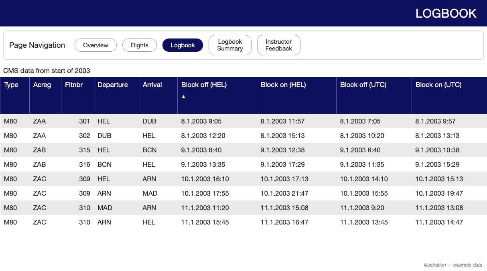
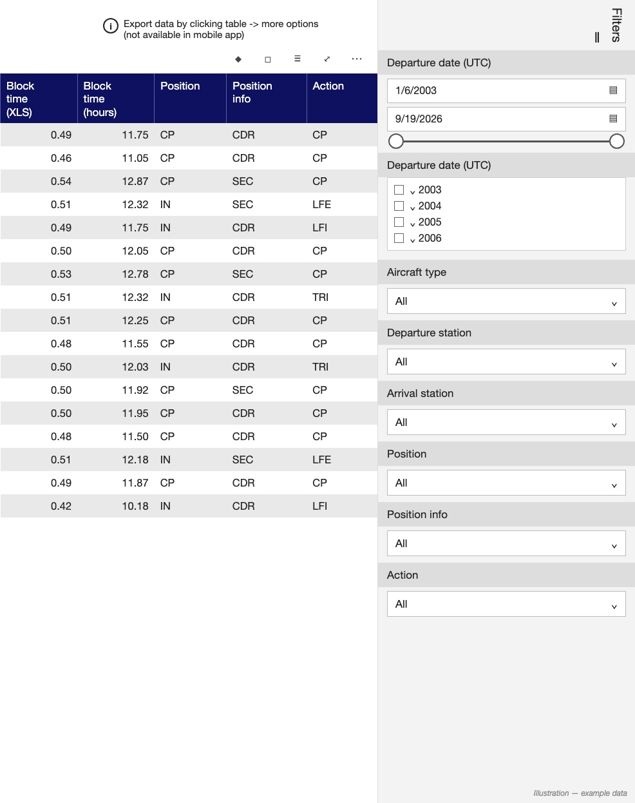
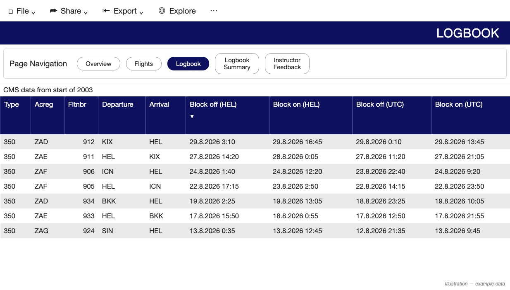
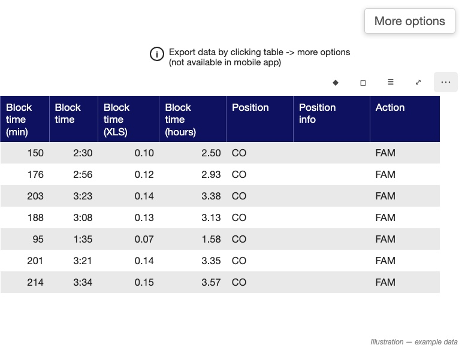
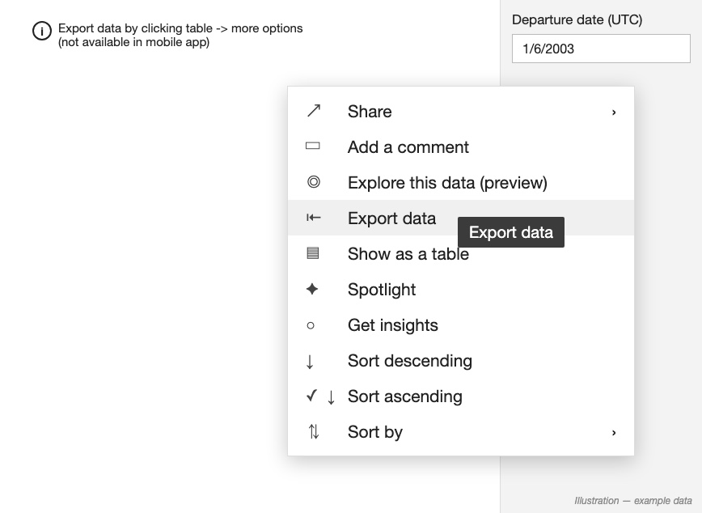
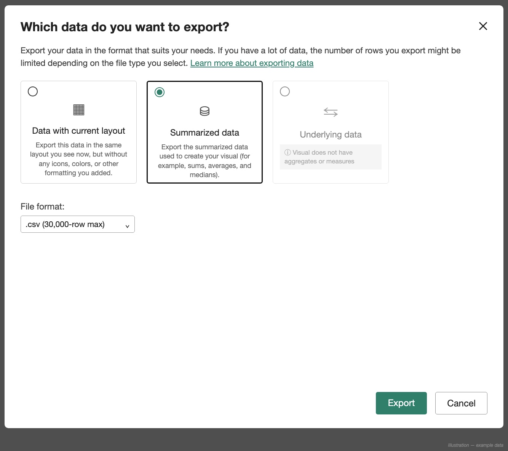
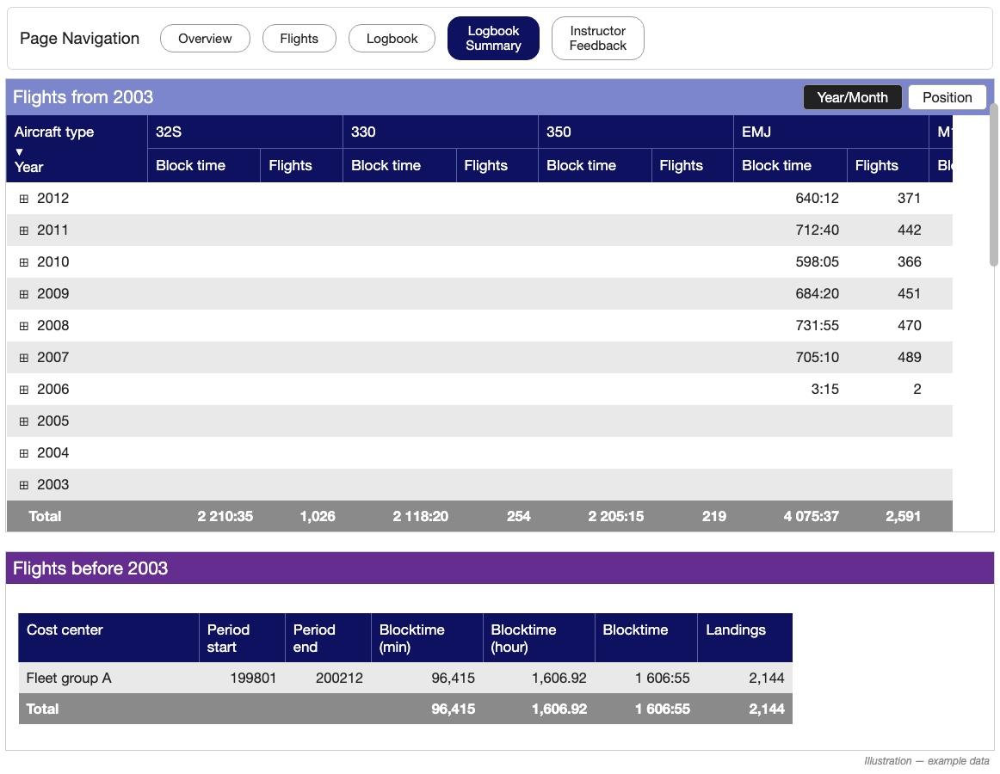

SKAJ
SKAJExporting a Finnair logbook
The same steps as in SKAJ’s setup, for following on a computer.
Use a web browser: on a computer, or Safari on an iPhone or iPad. The Power BI app does not offer the CSV export.
In the Pilot Dashboard
- Open the Pilot Dashboard and its Logbook tab.

- In Filters on the right, set the departure date range to cover the whole career. Leave the other filters on “All”.

- Check that nothing is cut off: sort the “Block off” column ascending, then descending. The first and the most recent flight should both show.

- Click the table, then the … (More options) icon that appears above it.

- Choose Export data.

- In the export window:
- choose Summarized data
- set File format to .csv
- click Export

Into SKAJ
- The browser saves the file to Downloads: it is the newest .csv there.
- From a computer, move it to the iPhone or iPad: AirDrop, iCloud Drive or email.
- In SKAJ, tap Choose my file and pick it.
Flying before 2003
The export starts in 2003. For earlier flying, open the Logbook Summary tab, find “Flights before 2003” and enter its Blocktime and Landings in SKAJ under Historical totals.

SKAJ is an independent app, not affiliated with, endorsed by or sponsored by any airline or aviation authority. More help: Support.